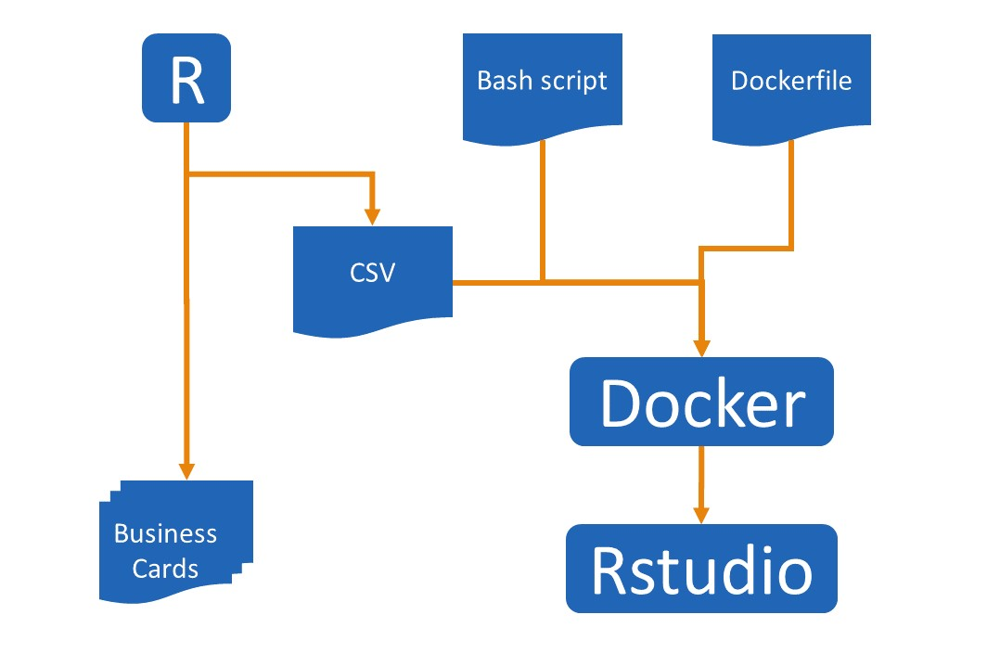

I recently delivered a day of training at SQLBits and I really upped my game in terms of infrastructure for it. The resultant solution was super smooth and mitigated all the install issues and preparation for attendees. This meant we got to spend the whole day doing R, instead of troubleshooting.
I’m so happy with the solution for an online R training environment that I want to share the solution, so you can take it and use it for when you need to do training.
TL;DR
Workflow for constructing a training environment with RStudio
To get a web-facing Rstudio server, with login details for users, and all the prerequisites installed:
Generate usernames and passwords
Build a Docker image based on rocker that contains your users and any prerequisites
Run docker image on VM with a port binding to make the Rstudio accessible externally
Where the magick happens
The first thing I wanted was user names and passwords for people. I wanted these preprepared and, ideally, on something with my contact info. I’d used moo before so I knew I could do up to 100 custom cards – I just needed to make them. I used the package random and the package magick to generate credentials and write them on to PDFs that could then be uploaded to moo.
You can read the whole gist but the key code includes:
The next, and much more tricksy, bit was writing a script that would correctly create users. Peter Shaw helped me out initially and the code looks like:
for userdetails in `cat users.csv`
do
user=`echo $userdetails | cut -f 1 -d ,`
passwd=`echo $userdetails | cut -f 2 -d ,`
useradd $user -m -p `mkpasswd $passwd`
done
This goes through each line in the CSV and adds a user with a specified password. We use the mkpasswd utility here to encrypt the password. mkpasswd is part of the whois program and we’ll need that tidbit later.
This needs to be done not only to give people login info but a home directory to save their stuff into. If they don’t have home directories then Rstudio throws a tantrum with them.
rocker
The next bit was getting some sort of server with Rstudio installed. Dirk Eddelbuettel made a bunch of Docker containers available under the rocker brand. One of these has Rstudio server and the [tidyverse]() installed. Using this preconfigured container would mean I’d only have to add my finishing touches to it to get everything I needed.
Dockerfile
The last but one step was building my own customised Docker container that used rocker as a base, created all my users, and installed anything extra I wanted on top of the tidyverse.
FROM rocker/tidyverse
MAINTAINER Steph Locke <steph@itsalocke.com>
RUN apt-get install libudunits2-0 libudunits2-dev whois
RUN R -e 'devtools::install_github("lockedata/TextAnalysis")'
RUN R -e 'devtools::install_github("dgrtwo/widyr")'
ADD https://gist.githubusercontent.com/stephlocke/0036331e7a3338e965149833e92c1360/raw/607fb01602e143671c83216a4c5f1ad2deb10bf6/mkusers.sh /
ADD https://gist.githubusercontent.com/stephlocke/0036331e7a3338e965149833e92c1360/raw/6d967c19d9c73cecd1e2d4da0eed2cd646790bd5/users.csv /
RUN chmod 777 /mkusers.sh
RUN /mkusers.sh
This starts with the tidyverse & Rstudio then:
adds the requisite programs for dependencies in my package and whois for mkpasswd to be able to work
installs packages from github, notably the one designed to facilitate the day of text analysis
get the shell script and the csv from the gist
make the shell script executable and then run it
C’est fini!
The final step was to actually this container on a Digital Ocean virtual machine (but it could be run anywhere) like so:
docker pull stephlocke/montypythonwkrshopdocker
docker run -d -p 80:8787 stephlocke/montypythonwkrshopdocker
You can take my github repo with the Dockerfile and customise it to suit your own requirements, build it in Docker and then use it whenever you need an R training environment that can be customised to your needs and is accessible from a web browser.
You can use it for general working environments but make sure to read my data persistence in Docker post first as the run command does not have an external volume mapped and if your host for docker crashes, everything will be lost permanently. An extra incentive to use source control maybe!